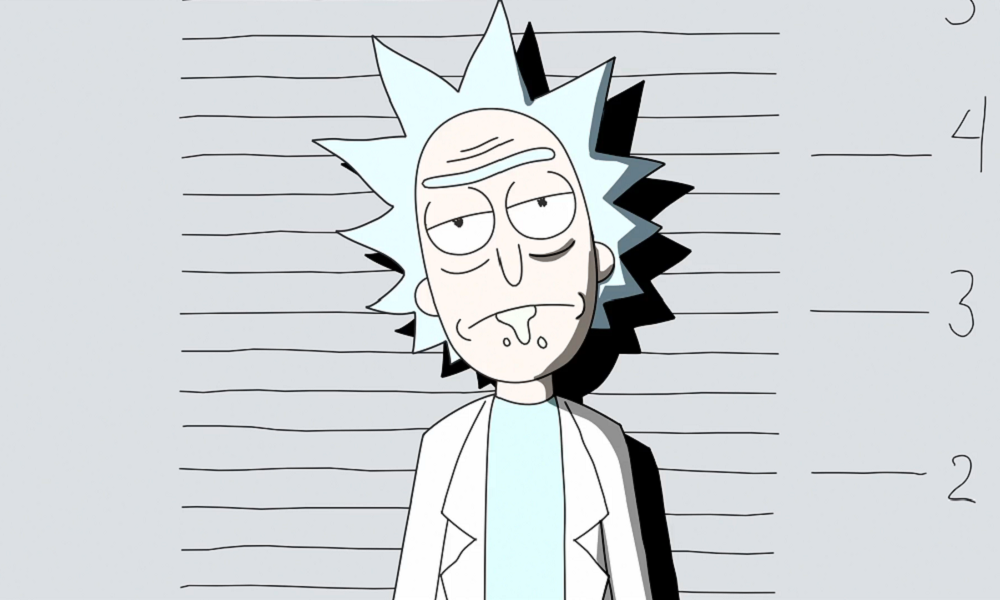
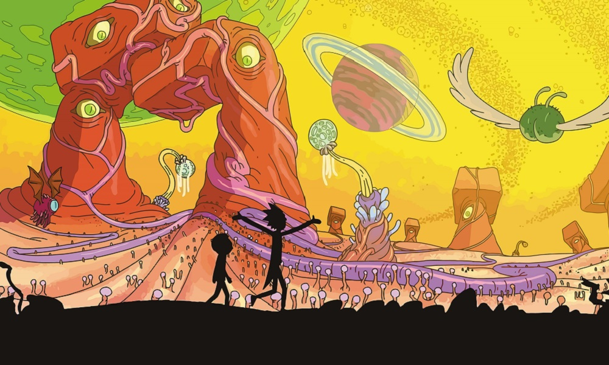
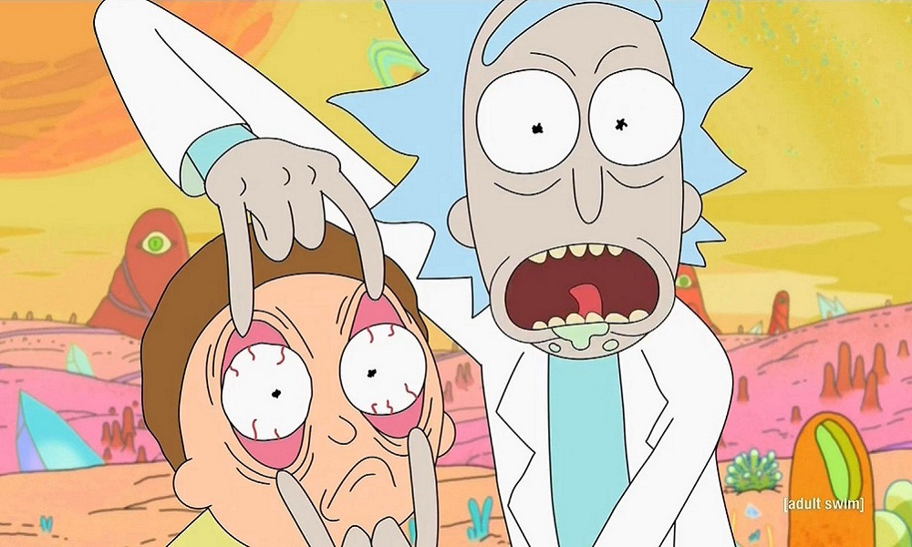
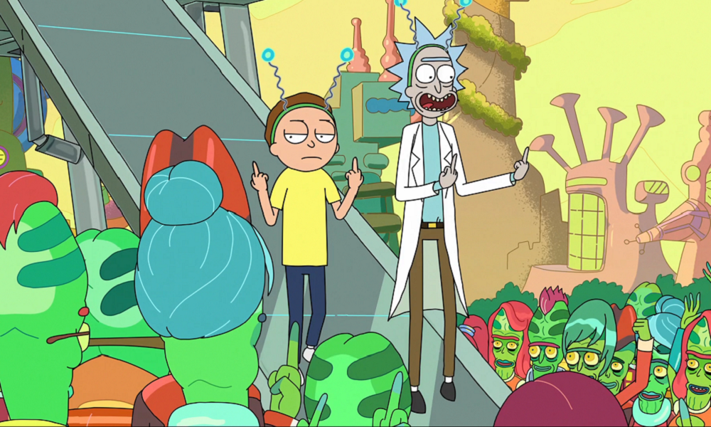
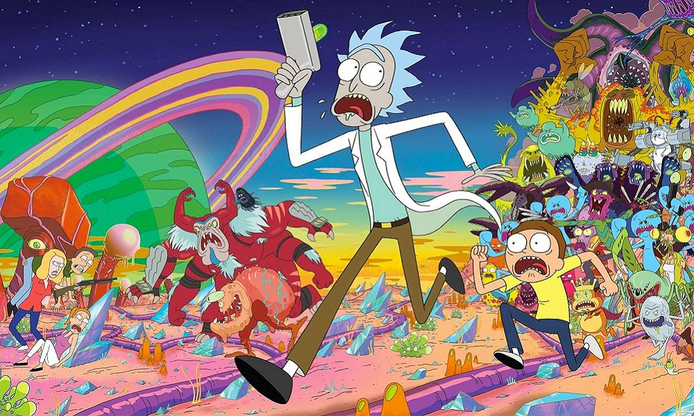

Rick and Morty é um dos desenhos mais famosos da atualidade, a série animada chegou conquistando uma legião de fãs pelo mundo todo, Rick and Morty também possui episódios muito polêmicos na qual os personagens do desenho sem envolvem em situações bem inusitadas, se você é um fã do desenho então confira 10 incríveis curiosidades sobre Rick and Morty:
1. Inspiração
Originalmente os criadores fizeram o desenho inspirado na Franquia “De Volta Para o Futuro”, eles queriam fazer uma sátira à franquia criada por Robert Zemeckis, porém a zueira ficou muito mais seria e os criadores acabaram expandindo o universo e a história do desenho fazendo Rick e Morty percorrer viagens interdimensionais.
2. Bebidas
Nunca foi revelado o que Rick costuma tomar em seu cantil, apenas vemos ele dando vários goladas em sua garrafa, no desenho podemos ver que Rick é um viciado em drogas podendo fazer qualquer mistura ou droga intergaláctica com facilidade, Dan Harmon (um dos criadores da série) já falou que no cantil de Rick contém apenas Vodka e nada de mais.

3. Primeiro episódio
O episódio piloto de Rick And Morty foi feito em apenas 6 horas, após Harmon e Roiland conseguir vender o nome da série eles ficaram com o prazo muito apertado e teve que começar a trabalhar imediatamente na série.

4. Dupla dinâmica
Em “De Volta Para o Futuro” vemos uma grande amizade e parceria entre Dr. Emmett Brown e Marty McFly, curiosamente a parceria dos dois se assemelham muito com a de Rick e Morty.

5. Não faz sentido
Os acontecimentos de Rick and Morty não giram em torno de nada, se você parar para pensar os episódios é praticamente todos aleatórios e quase independentes, porém isso não significa que a história de um episódio não esta ligado a outro. Harmon já disse que a história de Rick and Morty “é uma história sobre não ter uma história”.

6. Crossover
Rick and Morty já deram as caras em Os Simpsons, os criadores foram convidados a fazer um Crossover onde eles colocam os dois personagens da série para aparecer durante a abertura e matar a família Simpson atropelado com sua nave.
7. A grande ideia
Enquanto a maioria das animações são adaptadas para um determinado ambiente e história, Rick and Morty não se prende a nada, os criadores da série estão livres para dar a Rick and Morty qualquer aventura que eles quiserem, uma vez que o universo de Rick e Morty não existe regras.

8. Dublagem
Além de Justin Roiland ser um dos criadores da série ele também faz parte do elenco de dublagem, ele empresta sua voz a dois personagens sendo eles Rick e Morty.
9. Universo principal
Rick and Morty vive diversas aventuras intergalácticas durante os episódios, no desenho é dito que existe um número infinito de realidades e universos, porém o universo que mais acontecem as histórias é o da dimensão C-137.
10. Filosofia
Rick and Morty retrata paradigmas e temas bastante delicados, os personagens fazem muitas referências a uma perspectiva existencialista e retratam muito o determinismo e o niilismo.